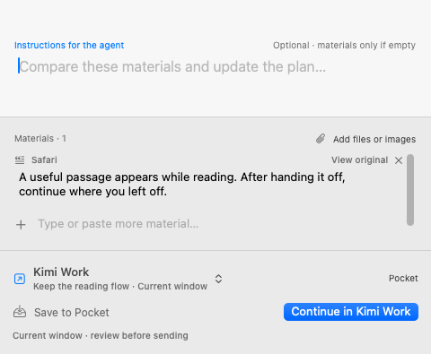
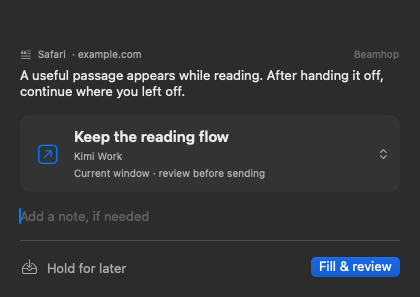

Native macOS utility · Development preview
Bring material to
work in progress.
Select a passage, keep its source and add an instruction.
Hand it to an external tool, or hold it for later.
The current app and design explorations are shown separately. Local recommendations in the new essay are not implemented yet.
Beamhop today
One small handoff.
Press ⌘⇧Space to capture a selection, choose a destination and add a prompt. Copy it, prepare a draft for review, or press ⌘5 to hold it for later.
A work name currently remembers an application, not an exact session address. Preparing a draft does not mean it has been sent or executed. This is a development preview with no tagged release yet.
Source, installation and progress ↗

Interactive essays
Explore the product through use.
Hands-on design explorations. Sessions, suggestions and receipts are simulated; these pages do not connect to your apps.
03 · LatestRespond, then understand.
A lighter panel, an immediately visible prompt field and local recommendations without model dependencies.
Work can branch. Keep your train of thought.
Select passages in the article. Open the corner shelf only when needed.
Send the information. Stay where you are.
Recognize a destination once, then find it more easily for the next passage.
Get the handoff right.
Product boundaries, discussion notes and hypotheses still to test.